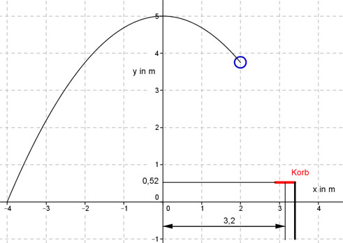

Aufgabe 135 Trifft der Ball in den Korb, wenn seine Flugbahn eine Parabel der Form y = ax2 + b ist?  Es ist eine Parabel der Form y = ax2 + b, a und b sind zu ermitteln. Man kann 2 Punktkoordinaten ablesen: P1(-4|0) und P2(0|5) Eingesetzt: 0 = a * (-4)² + b 0 = 16a + b (1) 5 = a * (0)² + b b = 5 In (1) eingesetzt: 0 = 16a + 5 |-5 16a = -5 |:16 5 a = - ---- 16 Gesuchte Funktionsgleichung: 5 y = - ---- x2 + 5 16 Wenn man in diese Gleichung für x = 3,2 einsetzt, müsste für y = 0,52 herauskommen, wenn der Ball in den Korb treffen soll. 5 y(3,2) = - ----3,22 + 5 16 y(3,2) = - 3,2 + 5 = 1,8 --> Der Ball trifft nicht in den Korb.